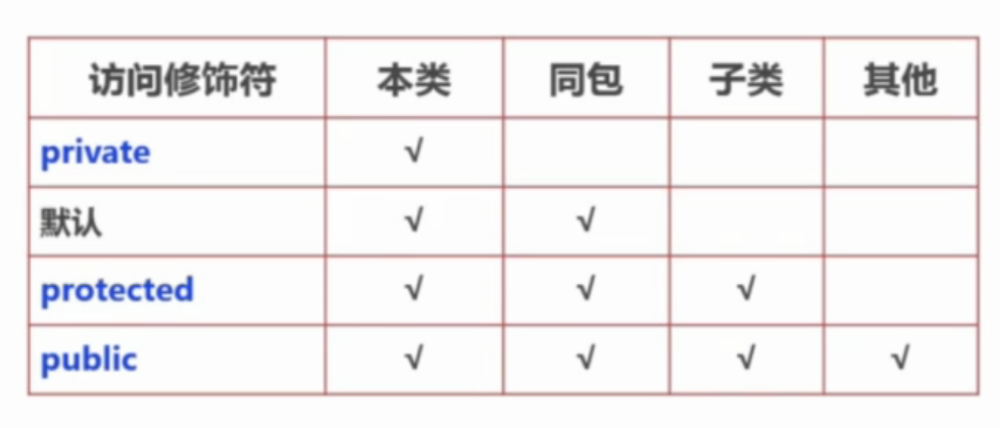

继承是一种类与类之间的关系(A is a B)
一. 特点
- 不同于生活中，java中子类必须继承父类的所有属性，不能选择性继承
- 子类只能继承父类的公共属性，不能继承私有属性
- java中的继承，一个只能有一个父类，不能有多个父类
- 父类不能访问子类的特有的方法和属性（即使是子类的public属性或方法）
- 一个继承体系中,查阅父类功能,创建子类对象使用(因为父类有可能不能实例化--接口和抽象类)
- 子类中所有构造函数的第一行都是被隐藏的
super()
二. 方法重写
方法重写的场景？
父类有eat方法，子类也有eat方法，但子类不想沿用父类的方法，想要有不同的eat表现形式
方法重写
1. 在有继承关系的两个类中，子类重写父类的方法
2. 方法名，方法返回值，参数列表（顺序/个数/类型）与父类完全一致
3. 子类方法访问修饰符范围 >= 父类访问修饰符范围
方法重载
1. 同一个类中
2. 方法名相同，参数列表不同（顺序/个数/类型）
3. 方法返回值，访问修饰符随意
无论方法重载还是方法重写，如果方法的顺序，类型相同，只是参数名不同，都不能构成重载或重写。
在继承中，不仅可以重写方法，也可以在子类中定义和父类重名的属性，达到重写父类属性的效果。
访问修饰符

public:接口访问权限
protected:继承访问权限
default:包访问权限--当子类在同包下，是可以访问的
三. super关键字
super是继承中的关键字，在继承中有两个作用。
- 子类重写父类的方法后，程序默认会调用子类重写的方法，如果，我想要调用父类的方法呢？
// 子类访问父类成员方法
super.print();
// 子类访问父类属性
super.name;
- 子类对象构造过程必须调用父类构造方法，系统默认调用父类的无参构造方法，当父类有很多个构造方法时， 子类怎样自定义调用父类的构造方法呢？
public Cat(){
super(String name, int month);
}
在子类构造方法的第一行使用super()，让子类自定义选择父类的构造方法。
综上，super在继承中有两种用途:
一是在子类中调用父类的成员方法和属性；
二是在子类构造方法中帮助子类自定义选择父类构造方法
- super && this
// 子类的无参构造方法
public Cat(){
}
// 子类的有参构造方法
public Cat(String name, int month){
this(); //调用子类的无参构造
}
this：当前类对象的引用
访问当前类的成员方法/属性/构造方法
super：父类对象的引用
访问父类的成员方法/属性/构造方法
子类构造方法中，this()和super()不能同时出现，因为他们都表示调用构造方法，都抢着在第一行
同样，this和super都不能在静态方法中使用
四. final关键字
final 类中的所有方法都不能被重写,可用final有选择的修饰方法
final可修饰类/方法/变量
- final修饰类---该类不可被继承
- final修饰方法--该方法不可被重写
final不能修饰构造方法 - final修饰变量
- 成员变量：
该成员变量只可在构造方法代码块或构造代码块中被赋值 - 局部变量：
该局部变量在使用之前被赋值即可
- 成员变量：
- final配合static使用
修饰一些不会变化且只加载一次的配置变量，如URL等